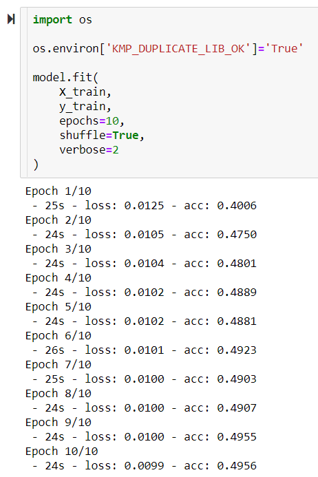
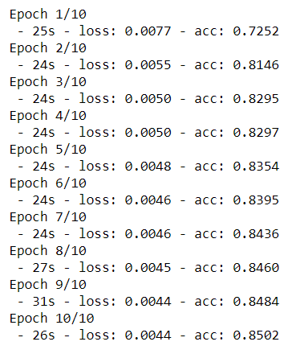

Group Name Analysis
In this analysis we used the GTD from 2014 to 2017. This included over 56,000 terrorist attacks. We wanted to create models to identify which terrorist groups carried out an attack based on a multitude of factors. This is important for several reasons:
- In order to respond to a terrorist attack and thwart a group, a government must be able to identify it.
- In the status quo it is incredibly difficult to identify which terrorist group carried out an attack. In this dataset, over 25,000 attacks occurred where the attacking group was not able to be identified.
- Finally, terrorist groups are notorious for claiming attacks they had nothing to do with. Groups have an incentive to do this because it makes them seem more dangerous and effective, which bolsters their influence.
The independent variables considered were: attack type, weapon type used in the attack, the target,
the number of casualties, and the country the attack occurred in.
The output variables were the 50 groups that have carried out the most attacks.
The first model was a logistic regression model.
Training Data Score: 0.8119875914026147
Testing Data Score: 0.7916251246261217
The second model was an SVM.
Loss: 0.0044
Accuracy: 0.8502
These results show that these models can predict the group responsible for an attack at fairly high accuracy. These models can be corroborated with existing intelligence to better inform decision makers about which groups are most active.
 